초음파비파괴검사기사(구) (2003-03-16 기출문제)
1과목: 초음파탐상시험원리
1. 초음파탐상시험법에 관한 특성 설명으로 틀린 것은?
- 진동자의 두께가 얇을수록 주파수가 높아진다.
- 주파수가 높을수록 투과 능력이 좋아진다.
- 진동자의 면적이 클수록 근거리 음장한계거리는 커진다.
- 진동자의 면적이 클수록 지향각은 작아진다.
(정답률: 알수없음)

2. 초음파 탐상기의 탐촉자(5Z20x10A45)가 있다. 쐐기 내의 음속 2,720m/sec, 시험재(탄소강)내의 음속 3,250m/sec일 때 입사각 α를 구하는 식은?
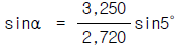
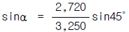
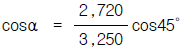
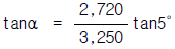
(정답률: 알수없음)
3. 초음파탐상시험을 할 때 결함에서 반사된 에너지의 양은 다음 어느 것에 의존하는가?
- 결함의 크기에만 의존한다.
- 결함의 방향에만 의존한다.
- 결함의 종류에만 의존한다.
- 결함의 크기, 방향, 종류 모두에 의존한다.
(정답률: 알수없음)
4. 음향 임피던스(Acoustic Impedance)가 서로 다른 물질의 경계면에서 일으키는 물리적인 현상이 아닌 것은?
- 굴절한다.
- 반사한다.
- 투과한다.
- 회절한다.
(정답률: 알수없음)
5. 동일 재질을 탐상할 때 A에코가 100%, B에코가 20%이면 그 차이는 몇 dB인가?
- 6dB
- 10dB
- 14dB
- 20dB
(정답률: 알수없음)
6. 경사각 탐촉자의 빔 중심축에 편심이 있는 것을 모르고 탐상하면 어떠한 문제가 발생하는가?
- 용접선에 평행한 면상결함을 놓치기 쉽다.
- 슬래그 혼입에 대한 검출감도가 저하된다.
- 용접선으로의 접근 한계가 길게 된다.
- 굴절각이 실제보다 약간 작게 측정된다.
(정답률: 알수없음)
7. 주조품의 결함중에서 정지한 주금(鑄金)과 주형(鑄型)의 상호 작용으로 생기는 결함은?
- 개재물
- 기공
- 탕계
- 라미네이숀
(정답률: 알수없음)
8. 직경 20㎜, 주파수 5MHZ인 수직탐촉자로 철강재를 탐상할 때 초음파의 지향각은 몇 도인가? (단, 철강재의 종파속도는 5900m/s 이다.)
- 약 10도
- 약 6.6도
- 약 5.2도
- 약 4.1도
(정답률: 알수없음)
9. 다음 중 초음파 두께 측정에 있어서 중요한 오차가 발생할 경우가 아닌 것은?
- 음파의 진행속도가 시험하는 금속에 정해진 상수값에 비해 편차가 클 때
- 보정용 탐촉자와 측정용 탐촉자가 서로 다를 때
- 보정시의 접촉매질과 측정시의 접촉매질이 서로 다를 때
- 보정용 대비시편과 검사체의 재질이 서로 다를 때
(정답률: 알수없음)
10. 초음파탐상시험에서 빔 분산이 발생하는 영역은?
- 근거리 음장영역
- 원거리 음장영역
- 진동자 영역
- 불감대 영역
(정답률: 알수없음)
11. 다음 중 근거리 음장의 길이(Xo)를 구하는 식은? (단, D = 진동자의 직경, λ = 파장일 때)
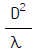
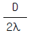
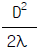
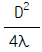
(정답률: 알수없음)
12. 초음파의 투과와 반사를 결정할 때 음향 임피던스가 중요하다. 다음 중 음향임피던스가 가장 큰 재료는?
- 물
- 유리
- 공기
- 철
(정답률: 알수없음)
13. 다음은 비파괴시험 시공방법의 확인시험에 대해 기술한 것이다. 올바른 것은?
- 비파괴시험을 적용하는 시험대상물의 제작비용은 일반적으로 검사사양서에 나타내어 진다.
- 적정한 검사를 하기 위해서는 검사사양서의 요구에 합치된 검사요령서를 작성하고 그 타당성을 확인하고 나서 작업을 실시한다.
- 방사선투과시험과 초음파탐상시험은 시험시에 검사요령서의 내용이 시험대상물의 표면결함을 충분히 검출 가능한가를 확인하는 시험방법이다.
- 강용접부 대상의 확인시험에서는 표면결함의 종류, 시험장치와 시험용 재료 및 시험조건의 3가지가 확인 항목으로 되어 있다.
(정답률: 알수없음)
14. 인간의 시감도(視感度)는 빛의 파장에 크게 영향을 받는 다. 일상적인 조건하에서 다음 중 가장 시감도가 높은 파장은?
- 256nm
- 365nm
- 556nm
- 795nm
(정답률: 알수없음)
15. 다음 중 초음파 공진법에 사용하는 탐촉자의 압전 재료로 사용하지 못하는 것은?
- X-cut 수정
- Y-cut 수정
- Lithium Sulfate
- Ceramic Titanate
(정답률: 알수없음)
16. 오스테나이트계 스테인리스강용접부의 주상정 내에서의 초음파특성에 대한 설명중 바른 것은?
- 주상정 성장방향과 종파의 진행방향에 따라 종파음속이 변한다.
- 주상정 성장방향과 종파의 진행방향에 관계없이 항상 횡파음속은 일정하다.
- 주상정 성장방향에 대해 45° 로 입사하는 종파의 음속이 가장 느리다.
- 주상정 성장방향에 대해 45° 로 입사하는 종파의 감쇠가 가장 크다.
(정답률: 알수없음)
17. 표면이 거친 시험편을 초음파로 검사하는 경우, 다음 중 검사에 방해가 되는 가장 중요한 요인은?
- 초음파의 원형상 형태
- 입사 지시 에코 폭의 증가에 의한 분해능의 감소
- 음향 효과의 불일치
- 비대칭의 파형
(정답률: 알수없음)
18. 다음 중 봉형 강재 탐상시 측면에서 파형변이를 유발하여 가상지시를 만들 확율이 가장 적은 주파수는? (단, 탐상조건은 동일)
- 1㎒
- 2㎒
- 3㎒
- 4㎒
(정답률: 알수없음)
19. 원거리음장에서 빔의 분산각을 나타내는 식은? (단, ø : 빔분산각, λ : 파장, f : 주파수, V : 속도, d : 진동자직경)
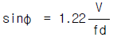


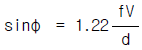
(정답률: 알수없음)
20. 동일 재질내에 입사한 초음파의 주파수를 변화시킬 때 나타날 수 있는 현상은?
- 전파속도의 변화
- 입사각의 변화
- 반사각의 변화
- 분해능의 변화
(정답률: 알수없음)
2과목: 초음파탐상검사
21. 반사원이 의사지시 또는 결함지시인지를 판단하기 위하여 반사원의 위치를 정확히 측정해야 한다. 다음중 결함위치 측정시 오차의 원인이 아닌 것은?
- 결함의 형상에 따른 오차
- 결함에서의 파의 감쇠에 의한 오차
- 장치의 조정 및 계측에 의한 오차
- 결함의 경사로 인한 오차
(정답률: 알수없음)
22. 초음파탐상시험은 시험결과의 신뢰성을 확보하기 위해 많은 노력이 요구된다. 이를 위한 적합한 방안이라 생각되는 것은?
- 정량적인 결함평가 기술 개발과 검사기술자의 자격 인정 및 훈련
- 수동화 등에 의한 기록성 향상
- 결함평가 기술에 따른 재현성을 위해 수동검사를 적극 활용
- 검사기술자의 자격 인정과 수동화를 통한 검사장비의 시스템화 구축
(정답률: 알수없음)
23. STB-G 표준시험편의 주된 용도가 아닌 것은?
- 수직 탐상의 감도조정
- 수직 탐상 결과의 판정
- 탐상기의 증폭직진성의 체크
- 수직 탐촉자의 거리 특성 체크
(정답률: 알수없음)
24. 시험체 탐상면의 거칠기로 인해 감도와 분해능이 저하될 때 이를 개선하는 방법으로 가장 적당한 것은?
- 탐상기의 증폭기를 낮추어 사용한다.
- 고주파수 탐촉자를 사용한다.
- 초음파 출력이 높은 탐촉자를 사용한다.
- 산란파를 억제하기 위해 주사면 근처에 금속판을 놓아 사용한다.
(정답률: 알수없음)
25. 초음파 탐상장치에서 탐촉자의 진동자 성능을 나타내는 중요한 인자가 감도와 분해능이다. 이 때 탐촉자의 Q값이 크고, 대역폭이 작으며, 펄스폭이 길 때 감도와 분해능의 관계는?
- 감도와 분해능이 커진다.
- 감도는 작아지고 분해능은 커진다.
- 감도는 커지고 분해능은 작아진다.
- 감도와 분해능이 작아진다.
(정답률: 알수없음)
26. 어떤 단강품을 2MHz로 탐상하였을 때 전체적으로 임상 에코가 높아 저면에코가 충분히 나타나지 않았다. 탐상조건으로서 다음의 어느 것을 선택하는 것이 좋은가?
- 탐상감도를 더욱 높게 한다.
- 탐상감도를 더욱 낮게 한다.
- 주파수를 더욱 높게 한다.
- 주파수를 더욱 낮게 한다.
(정답률: 알수없음)
27. 경사각 탐촉자의 전파 경로에 대한 설명중 맞는 것은?
- 횡파를 경사지게 입사시켜 매질에서 횡파가 표면에 경사지게 전파하도록 한다.
- 종파를 경사지게 입사시켜 매질에서 종파가 표면에 경사지게 전파하도록 한다.
- 횡파를 경사지게 입사시켜 매질에서 종파가 표면에 경사지게 전파하도록 한다.
- 종파를 경사지게 입사시켜 매질에서 횡파가 표면에 경사지게 전파하도록 한다.
(정답률: 알수없음)
28. 수침법을 이용한 초음파탐상시험은 음향렌즈로 초점을 형성하게 하여 시험한다. 이 때 동일조건에서 강을 탐상한 경우와 구리를 탐상한 경우 맞는 설명은? (단, 강의 VL = 5900 m/sec, 구리의 VL = 4700 m/sec 강의 음향임피던스 = 4.6x107 ㎏/m2.sec 구리의 음향임피던스 = 4.1x107 ㎏/m2.sec )
- 구리가 강에서 보다 초점거리가 짧아진다.
- 구리가 강에서 보다 초점거리가 길어진다.
- 초점거리는 변하지 않고 음의 퍼짐정도만 변한다.
- 아무런 변화도 일어나지 않는다.
(정답률: 알수없음)
29. 초음파탐상시험에서 용접부의 결함을 등급분류하는 경우 다음 항목 중 필요한 것은?
- 시험주파수
- 탐촉자의 공칭굴절각
- 진동자의 크기
- 결함 에코높이의 영역
(정답률: 알수없음)
30. 그림 2와 같이 저면부의 응력부식 균열을 검출했을 때 그 에코가 그림 1에서와 같이 탐상도형이 나타났다면 단부회절법(Tip diffraction method)을 이용하여 결함의 크기 (높이)를 계산하는 식은? (단, h : 결함높이, a : 결함상단부에서 회절된 에코까지의 초음파 빔거리, b : 결함 하단부에서 반사된 에코까지의 초음파 빔거리)
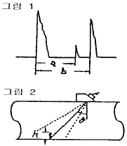
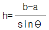
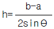
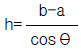
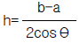
(정답률: 알수없음)
31. 같은 크기의 결함이 있을 때 초음파탐상시험으로 다음 중 가장 발견하기 쉬운 결함은?
- 구형의 공동
- 초음파 진행방향과 수직인 균열
- 초음파 진행방향과 평행인 균열
- 이물질의 개재
(정답률: 알수없음)
32. 다음 시험편중 경사각탐촉자의 입사점을 측정하는데 사용되지 않는 것은?
- STB-A1 Block
- IIW-2형(Miniature Block)
- DSC형 Block
- DS형 Block
(정답률: 알수없음)
33. 강재 시험체를 그림의 위치에서 2Z20N을 이용하여 수직탐상하였을 때 나타나는 탐상도형은? (단, 측정 범위는 강중 종파 250㎜이고 탐상부분에는 결함은 없다.)
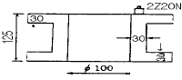
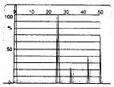
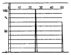
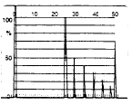
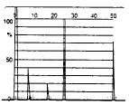
(정답률: 알수없음)
34. 초음파탐상시 불연속부의 응답과 거리에 대한 검사감도 보정은 어느 것을 사용하는 것이 제일 적당한가?
- 면적/진폭 블럭
- 면적/진폭 블럭, 거리/진폭 블럭
- 거리/진폭 블럭
- 직경이 다른 블럭
(정답률: 알수없음)
35. 초음파탐상시 게인을 높여도 저면에코가 나타나지 않는 경우 취할 수 있는 조치는?
- 2탐촉자법을 사용한다.
- 처음보다 낮은 주파수를 사용한다.
- 지름이 작은 탐촉자를 사용한다.
- 점성이 작은 기름을 쓴다.
(정답률: 알수없음)
36. 시험체(종파 5900 m/sec, 횡파 3230 m/sec)의 두께 1″ 를 5MHz 수직탐촉자를 사용하여 적절히 물거리를 조절한 후 수침법으로 시험하였다. 초음파탐상기의 CRT 시간축 스크린을 5″ 로 조절하였다면 제 1 back wall 에코(B1)는 영점으로 부터 다음 중 어디에 나타나겠는가? (단, 물에서의 속도 : 1500 m/sec)
- 1/4″
- 1/2″
- 3/4″
- 1″
(정답률: 알수없음)
37. 초음파 탐상기의 송신부 기능은?
- 수신된 신호를 증폭한다.
- 탐상 게이트를 설정한다.
- 고전압 전기펄스를 발생시킨다.
- 시간축을 제어한다.
(정답률: 알수없음)
38. RB-4형 시험편 시리즈(No.1∼No.7)에서 표준구멍의 위치가 두께의 1/2 지점에 위치하는 시험편은?
- RB-4형 No.1
- RB-4형 No.3
- RB-4형 No.5
- RB-4형 No.7
(정답률: 알수없음)
39. 다음 중 주강품에서 주로 발생하지 않는 결함은?
- 수축공
- 콜드셧
- 균열
- 시임(seams)
(정답률: 알수없음)
40. 수침법에서 시험체에 횡파를 발생시키는 가장 보편적인 방법은?
- 시험체의 입사면에 수직한 종파를 입사시킨다.
- 다른 주파수로 진동하는 두개의 결정체를 사용한다.
- Y-cut 결정체를 사용한다.
- 진동자를 고정시킨 장치의 각도를 적절하게 변화시킨다.
(정답률: 알수없음)
3과목: 초음파탐상관련규격및컴퓨터활용
41. ASME Code가 요구하는 주사 방법으로 맞지 않는 것은?
- 주사방향과 수직방향으로 탐촉자 치수의 최소 10%는 중복주사를 해야 한다.
- 교정확인을 거치면 150mm/sec의 주사속도를 초과할 수 있다.
- 진동자 치수의 최소 10%는 중복주사를 해야 한다.
- 결함지시의 기록은 대비기준에 따른다.
(정답률: 알수없음)
42. Windows98에서 Window 종료 대화상자 중 시스템의 전원을 내리지 않고 최소한의 전력을 사용하는 상태로 두는 시스템 종료 방법으로 다시 원래의 화면으로 돌아오려면 마우스를 클릭하거나 키보드를 누르면 되는 것은?
- 시스템 대기
- MS-DOS 모드에서 시스템 다시 시작
- 시스템 다시 시작
- 시스템 중지
(정답률: 알수없음)
43. 컴퓨터로 할 수 있는 일을 수행하는 프로그램들 중 기능상 성격이 다른 것은?
- dBASEIII+
- MS-Access
- Fox-Pro
- Lotus-123
(정답률: 알수없음)
44. ASME Sec.V, Art.5에 따라 거리진폭 특성곡선(DAC Curve)을 작성하여 정밀탐상을 실시하던 중 결함지시의 최대 신호진폭을 알기 위해 기준 감도에서 15dB를 감소시켰더니 DAC Curve에 결함신호가 일치하였다. 이 결함지시의 최대신호 진폭은?
- 501% DAC
- 562% DAC
- 631% DAC
- 778% DAC
(정답률: 알수없음)
45. ASTM A-388은 초음파탐상시험의 규격을 제정한 것으로 어느 종류의 재료에 대한 것을 정한 것인가?
- 강판
- 용접부
- 주강품
- 단강품
(정답률: 알수없음)
46. ASME 규격에서 용접부에 대한 초음파탐상시험시 주사감도는 대비기준(reference level)과 비교하여 게인조정을 어떻게 하여야 하는가?
- 주사감도는 대비기준보다 최소한 12dB 높아야 한다.
- 주사감도는 대비기준보다 최소한 9dB 높아야 한다.
- 주사감도는 대비기준보다 최소한 2배 높아야 한다.
- 주사감도는 대비기준과 같아야 한다.
(정답률: 알수없음)
47. KS B 0896에 규정된 H선과 L선의 dB 차이는?
- 3dB
- 6dB
- 12dB
- 20dB
(정답률: 알수없음)
48. 다음 중 자기 스스로를 계속 복제하므로서 시스템의 부하를 증가시켜 결국 시스템을 다운시키는 프로그램은?
- Spoof
- Authentication
- Worm
- Sniffing
(정답률: 알수없음)
49. ASME Sec.V, Art.5에서 용접부의 두께가 1인치일 때 기본 교정시험편의 두께는?
- 3/4인치
- 1½인치
- 2인치
- 2½인치
(정답률: 알수없음)
50. KS D 0252 아크 용접 강관의 초음파탐상 검사방법에 따라 석유, 가스 등의 수송용 강관을 검사할 때 판정 레벨은?
- S-10의 에코 높이
- D-16의 에코 높이
- D-32의 에코 높이
- N-12.5의 에코 높이
(정답률: 알수없음)
51. Windows 98에서 [디스크조각모음]을 하는 목적은?
- 물리적 오류를 검사하기 위하여
- 논리적 오류를 검사하기 위하여
- 손상된 파일을 복구하기 위하여
- 프로그램을 더욱 빠르게 실행하기 위하여
(정답률: 알수없음)
52. KS D 0233에서 주파수 5MHz, 진동자재료 지르콘, 티탄산납계자기, 진동자의 크기 10x10인 이진동자수직 탐촉자를 나타내는 것은?
- 5Z10×10VD
- 5Z10×10ND
- 5C10×10VW
- 5C10×10ND
(정답률: 알수없음)
53. KS B 0831에 의한 경사각 탐촉자의 입사점 및 굴절각의 교정을 위해서 사용될 수 있는 표준시험편은?
- STB-G
- STB-N1
- STB-A2
- STB-A3
(정답률: 알수없음)
54. 초음파탐상용 G형 감도표준시험편 중 인접한 시편 V15-2 와 V15-2.8을 5MHz ø20㎜ 탐촉자로 측정할 때 표준홈 에코 높이의 차는 얼마 이내이어야 하는가?
- 4.8±1 ㏈
- 5.7±1 ㏈
- 15±1 ㏈
- 1.8±1 ㏈
(정답률: 알수없음)
55. 초음파탐상시험에서 초음파빔(beam)이 시험체의 두께 전체가 포함되도록 탐촉자를 용접선에 직각 방향으로 이동시키는 주사법은?
- 전후주사
- 탠덤주사
- 목돌림주사
- 진자주사
(정답률: 알수없음)
56. KS D 0040에서 시험체의 두께가 60mm이상일 때 사용할 수 있는 탐촉자는?
- N2Q20N
- B2M10x10A45
- N5Q10x10A70
- N4Q20ND
(정답률: 알수없음)
57. KS B 0896 부속서3 길이이음 용접부의 탐상방법의 규정에서 시험체의 곡률 반지름이 200mm일 경우 원칙적으로 사용하여야 하는 대비시험편은?
- RB-6
- RB-7
- RB-8
- RB-9
(정답률: 알수없음)
58. KS B 0896에 의한 강용접부의 초음파탐상시험시 탠덤탐상 하는 경우 탐상장치의 조정 및 점검시기는?
- 작업시간 4시간이내 마다
- 작업시간 6시간이내 마다
- 작업시간 8시간이내 마다
- 조정은 1주일이내 마다
(정답률: 알수없음)
59. KS B 0831에 의한 초음파탐상용 G형 표준시험편의 사용목적에 해당되지 않는 것은?
- 탐상의 감도 조정
- 탐상기의 종합 성능 측정
- 수직 탐촉자의 특성 측정
- 경사각 탐촉자의 특성 측정
(정답률: 알수없음)
60. 윈도우 바탕화면의 등록정보에서 변경할 수 없는 것은?
- 배경
- 보호기
- 네트워크
- 배색
(정답률: 알수없음)
4과목: 금속재료학
61. 라우탈(lautal)의 합금 성분으로 맞는 것은?
- Cu -Si-P
- Aℓ -Ni-Pb
- Aℓ -Cu-Si
- W -V -Mg
(정답률: 알수없음)
62. 베이나이트와 마텐자이트에 관한 설명이 틀린 것은?
- 공석강은 750℃이상의 온도에서 항온 변태시켜야 베이나이트가 형성되기 시작한다.
- 마텐자이트변태에서 Ms와 Mf 사이의 온도구간은 보통 200∼300℃ 이다.
- 마텐자이트는〔γ〕에서 일어나는 전단응력에 의해서 생성한다.
- 마텐자이트는 침상조직으로 성장한다.
(정답률: 알수없음)
63. 합금의 시효경화는 용질원자에 의하여 단위운동에 대한 저항에 원인이 된다.이 저항력의 크기 결정과 관련이 가장 적은 것은?
- 용질원자의 집합상태
- 용질원자의 크기
- 입자간의 평균거리
- 결정입계의 색깔
(정답률: 알수없음)
64. 합금강의 오스포오밍의 설명이 맞는 것은?
- 오스테나이트강을 재결정 온도 이하, Ms 점 이상의 온도범위에서 소성가공한 후 담금질한 것이다.
- 시멘타이트 변태온도 이상에서 담금질 하여야 한다.
- 경화의 주요인은 페라이트의 조대화에 있다.
- 열처리 후 조직은 마텐자이트입자의 조대화로 강도가 저하된다.
(정답률: 알수없음)
65. 구상흑연주철을 사형주조(sand casting)시 Pin hole 결함의 발생원인은? (단, 이 주철은 Mg 처리에 의하여 제조하는 것으로 함)
- 주형사(sand mold)의 수분(水分)이 부족하여
- 주형사의 통기도가 높아서
- 겨울철에 대기중의 수분이 낮아서
- Mg 처리량이 과다(過多)할 때
(정답률: 알수없음)
66. 포석형(RC130B 또는 C-130AM 이라함)의 풀림재로서 인장강도 100 Kgf/mm2, 연신율 15% 인 합금은?
- Fe - Mn 계
- Ti - Aℓ 계
- Zn - Mg 계
- Aℓ - Si 계
(정답률: 알수없음)
67. 0.4 wt% C 만을 함유한 탄소강을 평형 냉각시켰을때 상온에서의 경도는? (단,Ferrite의 경도는 80 HB, Pearlite의 경도는 300 HB, 공석 조성은 0.8 wt% C로 한다.)
- 90 HB
- 150 HB
- 190 HB
- 240 HB
(정답률: 알수없음)
68. 침탄용강의 구비조건에 해당되지 않는 것은?
- 저 탄소강이어야 한다.
- 침탄시에 고온에서 장시간 가열하여도 결정입자가 성장하지 않는 강이어야 한다.
- 표면에 결점이 없어야 한다.
- 고 탄소공구강이어야 한다.
(정답률: 알수없음)
69. 강에 첨가된 B 의 특징이 잘못된 것은?
- 경화능을 개선시킨다.
- 질량효과를 증대시킨다.
- O2및 N2와의 친화력이 강해진다.
- 모합금으로써 첨가해야 한다.
(정답률: 알수없음)
70. 입자분산강화금속(PSM)의 제조방법이 아닌 것은?
- 내부산화법
- 열분해법
- 풀몰드 주조법
- 용융체 포화법
(정답률: 알수없음)
71. 실용 동합금의 2원계 상태도에서 청동형에 대한 설명 중 맞는 것은?
- 공정변태한 것으로 시효성합금의 특수황동이라고도 한다.
- 포정 반응으로 생긴 β 가 상온까지 존재하므로 실용합금은 α 상 혹은 α +β 상의 조직이다.
- 공석 변태가 존재하며 이 공석 변태는 담금질로 방지할 수 있다.
- 청동형에는 Cu - Pb, Cu - Zn, Cu - Ag 등이 있다.
(정답률: 알수없음)
72. 탄소강이나 저합금강에서 시효(時效)를 받지 않고 있는 Martensite(virgin martensite)의 결정구조는?
- 면심입방정
- 체심정방정
- 조밀육방정
- 사방정
(정답률: 알수없음)
73. 중성자를 잘 통과 시키므로 원자로 연료의 피복제, 중성자의 반사제나 원자핵 분열기에 이용되는 금속은?
- Ge
- Be
- Si
- Te
(정답률: 알수없음)
74. 금속의 결정구조가 불규칙 상태에서 규칙 상태로 변태 되었을 때 재질에 미치는 영향은?
- 경도(硬度)가 감소한다.
- 연성(延性)이 낮아진다.
- 강도(强度)가 낮아진다.
- 전기 전도도가 감소한다.
(정답률: 알수없음)
75. 아연합금 중 ZAMAK 합금은?
- 다이캐스팅용 합금
- 가공용 합금
- 금형용 합금
- 고망간 합금
(정답률: 알수없음)
76. 황동에서 자연균열을 방지하려면 어떻게 하여야 하는가?
- 암모니아 분위기로 한다.
- 아연, 산소, 탄산가스 등을 증가시킨다.
- 200∼250℃에서 풀림하여 내부응력을 제거한다.
- 수은이나 그 화합물을 첨가한다.
(정답률: 알수없음)
77. WC-TiC, WC-TaC 분말과 Co 분말을 혼합, 압축성형 후 약 900℃정도로 수소나 진공 분위기에서 가열하여 1400℃ 사이에서 소결시켜 절삭 공구로 이용되는 금속은?
- 스텔라이트
- 고속도강
- 초경합금
- 모넬메탈
(정답률: 알수없음)
78. 마우러(maurer)의 조직도와 관련이 깊은 것은?
- Fe와 Mn
- C와 Si
- Cu와 Sn
- Ca와 Pb
(정답률: 알수없음)
79. 18 - 8 스테인리스강의 결정입계에 석출하여 입간부식(intergranular corrosion)을 일으키는 것은?
- 황화물 입자
- 질화물 입자
- 산화물 입자
- 탄화물 입자
(정답률: 알수없음)
80. 강재에 혼입되는 불순물 중에서 상온 취성에 가장 큰 영향을 미치는 원소는?
- P
- S
- As
- Sn
(정답률: 알수없음)
5과목: 용접일반
81. 피복 아크용접에서 아크 전압이 30V, 아크 전류가 150A, 용접속도는 20cm/min일 때 용접부에 주어지는 용접 입열량은 몇 Joule/cm 인가?
- 225
- 1350
- 22500
- 13500
(정답률: 알수없음)
82. 주철의 용접이 연강에 비하여 대단히 곤란한 이유로서 적합하지 않는 사항은?
- 예열하지 않는 용접에서는 냉각속도가 느리므로 담금질 경화가 되지 않는다.
- 일산화 탄소가스가 발생되어 용착금속에 기공이 생기기 쉽다.
- 장시간 가열하여 흑연이 조대화된 경우 모재와의 친화력이 나쁘다.
- 용융상태에서 급냉하면 백선화되어 수축이 큰 잔류응력이 발생되어 균열이 생기기 쉽다.
(정답률: 알수없음)
83. 다음 용접 중 알루미늄 합금이나 마그네슘 합금 등의 용접에 가장 적합한 것은?
- 서브머지드 용접
- 탄산가스 아크 용접
- 불활성가스 용접의 직류 정극성 용접
- 불활성가스 용접의 직류 역극성 용접
(정답률: 알수없음)
84. 피복아크용접에서 모재가 녹은 깊이를 의미하는 용어는?
- 용융지(weld pool)
- 용적(globule)
- 용락(burn through)
- 용입(penetration)
(정답률: 알수없음)
85. AW 300의 아크 용접기로 220[A]의 용접전류를 사용하여 10시간 용접했다. 이 경우 허용 사용율은 약 몇 % 인가?(단, 용접기의 정격 사용율은 45(%)이다.)
- 83.7
- 837
- 61.4
- 614
(정답률: 알수없음)
86. 직류 아크용접기의 특성 설명 중 잘못된 것은?
- 극성 선택이 가능하다.
- 자기 쏠림이 없다.
- 역률이 양호하다.
- 비피복봉 사용이 가능하다.
(정답률: 알수없음)
87. 보기의 KS 용접 도시기호를 올바르게 해석한 것은?
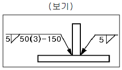
- 양쪽 모두 단속용접
- 단속용접 용접수는 3
- 용접 피치는 50㎜
- 용접 길이는 150㎜
(정답률: 알수없음)
88. 다음 가스절단 팁(Tip)의 절단산소 구멍의 종류 중에서 후판을 절단하는데 가장 많이 이용되는 것은?
- 직선형 노즐
- 스트레이트 노즐
- 다이버전트 노즐
- 저속 다이버전트 노즐
(정답률: 알수없음)
89. 용접시 생길 수 있는 수축 변형을 감소시키는 방법으로 비드를 두들겨서 용착금속이 늘어나게 하여 용착금속의 수축을 방지하여 변형을 감소시키는 방법은?
- 피닝법
- 케스케이드법
- 도열법
- 빌드업법
(정답률: 알수없음)
90. 가스용접용 토치는 사용하는 아세틸렌가스 압력에 의하여 저압식, 중압식, 고압식으로 나누어진다. 다음 중 저압식 토치의 아세틸렌 공급압력으로 가장 적합한 설명은?
- 0.04 kgf/㎝2 이상
- 0.07 kgf/㎝2 이하
- 0.4 kgf/㎝2 이상
- 1.0 kgf/㎝2 이상
(정답률: 알수없음)
91. 전기저항 용접에서 용접성에 영향을 가장 적게 미치는 인자는?
- 전류
- 전압
- 가압력
- 통전시간
(정답률: 알수없음)
92. 내용적 50ℓ 의 산소용기에 고압력계는 120기압 일 때, 프랑스식 200번 팁으로 몇시간 용접할 수 있는가? (단, 가스 혼합비는 1 : 1 이다.)
- 5시간
- 30시간
- 15시간
- 60시간
(정답률: 알수없음)
93. 수소와 질소가 용접부에 미치는 다음의 영향 중 질소의 영향으로 가장 적합한 것은?
- 금속 파면에 선상 조직을 일으킨다.
- 파면에 은점이 나타난다.
- 저온 뜨임시 시효 경화현상이 나타난다.
- 비드 언더 (bead under) 크랙을 유발한다.
(정답률: 알수없음)
94. 탄산가스 아크용접 용극식에서 일반적으로 사용되는 보호 가스가 아닌 것은?
- CO2 + O2
- CO2 + Ar
- CO2 + N2
- CO2 + Ar + O2
(정답률: 알수없음)
95. 교류 아크 용접기에서 AW300 이란 표시가 뜻하는 것은?
- 2차 최대 전류 300A
- 정격 2차 전류 300A
- 최고 2차 무부하 전압 300A
- 정격 사용률 300A
(정답률: 알수없음)
96. 기공 또는 용융 금속이 튀는 현상이 발생한 결과, 용접부 바깥면에서 나타나는 작고 오목한 구멍을 뜻하는 용어는?
- 피트(pit)
- 크레이터(crater)
- 홈(groove)
- 스패터(spatter)
(정답률: 알수없음)
97. 다음 중 서브머지드 아크 용접법의 장점 설명으로 틀린것은?
- 용입이 깊다.
- 비드 외관이 매우 아름답다.
- 용융속도 및 용착속도가 빠르다.
- 적용재료에 제한을 받지 않는다.
(정답률: 알수없음)
98. 아크용접에서 아크쏠림(arc blow)을 방지하기 위한 조치사항으로 틀린 것은?
- 직류(DC)용접기 대신 교류(AC)용접기를 사용한다.
- 접지점을 멀리하여 위치를 바꾼다.
- 가접을 크게하고 아크길이를 짧게한다.
- 용접전류를 낮추고 용접속도를 빠르게 한다.
(정답률: 알수없음)
99. 다음 중 점 용접법의 종류가 아닌 것은?
- 단극식 점용접
- 다전극식 점용접
- 저압식 점용접
- 맥동식 점용접
(정답률: 알수없음)
100. 용접균열은 발생장소에 따라서 용접금속 균열과 열영향부 균열로 대별된다. 다음 중 용접 비드 종점에서 흔히 볼수 있는 고온 균열로 열영향부 균열이 아닌 것은?
- 비드 밑 균열(under bead crack)
- 토 균열(toe crack)
- 층상 균열(lamellar tear)
- 크레이터 균열(crater crack)
(정답률: 알수없음)